Telemetría¶
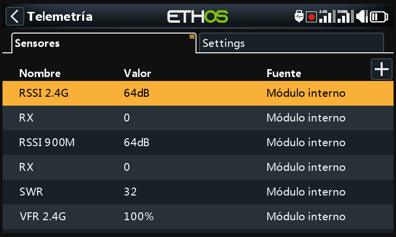
La telemetría transmite información desde el modelo hacia el piloto: calidad del enlace (RSSI, VFR), voltajes e intensidades, y cualquier otro dato que comunique un sensor conectado (posición GPS, altitud, etcétera). Se admiten hasta 100 sensores por modelo; el descubrimiento y la configuración se realizan aquí, pero la telemetría se muestra realmente mediante widgets de las pantallas de visualización, que se configuran por separado en Configurar pantallas.
Cómo funciona la telemetría FrSky¶
Los sensores de FrSky no necesitan concentrador: el Smart Port (S.Port) es un bus de 3 hilos (Gnd, V+, Señal), que se conecta en cadena en cualquier orden a la entrada S.Port de los receptores de las series X, S y posteriores, y que funciona en semidúplex a 57.600 bps (F.Port y FBUS son más rápidos).
- ID Física — hasta 28 nodos (incluido el receptor) comparten el bus, y cada uno necesita una ID Física única (00–1B hexadecimal). Los dispositivos FrSky se entregan con valores predeterminados razonables (p. ej. Vario = 00, FLVSS = 01, Current = 02, GPS = 03); si conecta dos dispositivos iguales, la ID Física del segundo debe alterarse desde Device Config.
- ID de la Aplicación — independiente de la ID Física: un sensor puede
enviar varios valores, cada uno con su propia ID de la Aplicación. Un Vario
tiene una única ID Física pero dos ID de la Aplicación (Altitud, Velocidad
vertical); un FLVSS tiene una ID Física y una ID de la Aplicación (Voltaje).
Monitorizar dos lipos 6S con dos sensores FLVSS implica cambiar ambas ID
en el segundo: la ID Física para que la comunicación en el bus sea exclusiva,
y la ID de la Aplicación para que el receptor pueda distinguir Lipo 1 de
Lipo 2 (p. ej.
0300→0301). Lo habitual es variar el 4.º dígito hexadecimal, de 0 a F.
!!! note Que varios sensores compartan la ID de la Aplicación con distintas ID Físicas sólo es válido con la detección de conflictos de sensores desactivada: se trata de una configuración para casos especiales, no del caso habitual.
Cada valor recibido se trata como un sensor propio: valor, ID Física / ID de la Aplicación, un nombre editable, unidad, precisión de los decimales, una opción de registro en la SD card y sus propios mínimo y máximo acumulados. Una vez configurados, los sensores se descubren automáticamente en cada encendido, pero la primera vez deben descubrirse manualmente. Una vez descubierto, un sensor puede anunciarse por voz, alimentar sensores calculados, utilizarse en interruptores lógicos, Vars o mezclas, mostrarse en una pantalla de telemetría personalizada, o leerse directamente desde esta pantalla de configuración sin necesidad de crear ninguna pantalla.
FBUS (antes F.Port2) va aún más allá, combinando el control SBUS y la telemetría S.Port en una sola línea a 460.800 bps (frente a los 115.200 de F.Port y los 57.600 de S.Port; las tres velocidades son incompatibles entre sí), y permite que un host se comunique con varios accesorios esclavos por esa única línea, todos configurables de forma inalámbrica desde la radio.
Telemetría multi-receptor (ACCESS Trio)¶
El Control Trío de ACCESS permite tener hasta tres receptores registrados en el sistema RF; cada receptor vinculado puede configurarse individualmente (asignación de los pines del puerto, etc.) en las posiciones RX1, RX2 y RX3. Normalmente hay una ruta de telemetría entrante por cada enlace RF; los sistemas Tandem/TD son la excepción, con un módulo de RF que tiene una sección de 2,4G y otra de 900M, es decir, dos rutas en un mismo módulo. La fuente de telemetría puede cambiar durante un vuelo dependiendo de las condiciones de RF; el sensor RX muestra en tiempo real qué receptor está enviando telemetría (y registra sus datos).
La aplicación más común: encadenar el bus de sensores S.Port a los tres receptores, que deberían compartir una fuente de alimentación común, y después registrar y vincular cada receptor y descubrir los sensores con normalidad; la fuente de telemetría cambiará automáticamente en función del RX activo, y la telemetría de los sensores S.Port externos continuará de forma transparente. (Los sensores internos del receptor —RSSI, VFR, RxBatt, ADC2 y el propio RX— no se enlazan de este modo; siempre se envían los del receptor que sea en ese momento la fuente. La telemetría simultánea de los tres receptores a la vez está prevista, pero todavía no está disponible.)
Sensores de calidad del enlace¶
- RSSI (Receiver Signal Strength Indicator, indicador de intensidad de la señal del receptor) — indica la intensidad de la señal que está recibiendo el modelo. Alarmas por defecto: ACCESS/TD/TW 35 ('RSSI bajo') / 32 ('RSSI crítico'), la pérdida de control se produce alrededor de 28; ACCST 45 / 42, con pérdida de control alrededor de 38. El aviso 'Telemetría perdida' se anuncia cuando el enlace se pierde completamente; a partir de ese momento NO sonarán más alarmas, porque la radio ya no dispone de telemetría que evaluar; tómelo como una señal para volver de inmediato e investigar el problema. (Cuando la radio y el receptor están demasiado cerca, a menos de ~1 m, el receptor puede saturarse causando alarmas espurias y dando lugar a un molesto bucle de «Telemetría perdida» - «Telemetría recuperada»; no es un fallo real.) El RSSI se aproxima bastante bien a la hora de determinar el alcance efectivo del enlace, pero el VFR es el indicador más fiable de la calidad del enlace.
Los receptores TD tienen un RSSI por cada banda (2.4G, 900M); los receptores TW también, uno por cada banda en uso (2.4FSK, 2.4LoRa, 900M): active Alerta individual de RSSI por banda para recibir alertas de voz individuales por cada banda en lugar de una única alerta combinada:
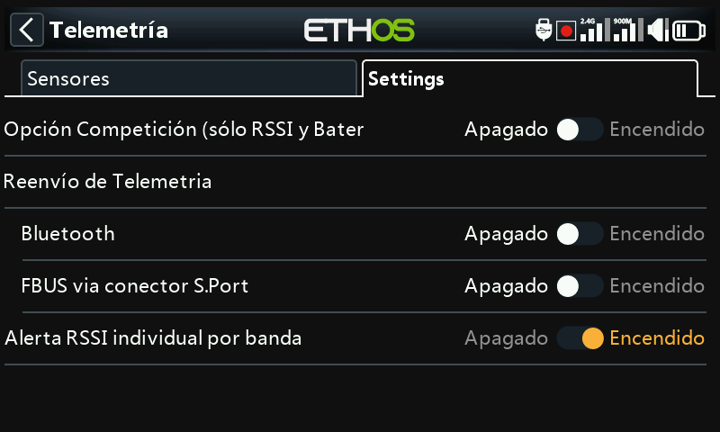
- VFR (Valid Frame Rate) — el número de paquetes de datos válidos recibidos por cada 100 paquetes recibidos; a partir de ACCESS V2.1 las tramas perdidas se eliminaron del cálculo del RSSI y se añadieron como este nuevo sensor. El valor predeterminado de Aviso de valor bajo es 50 %.
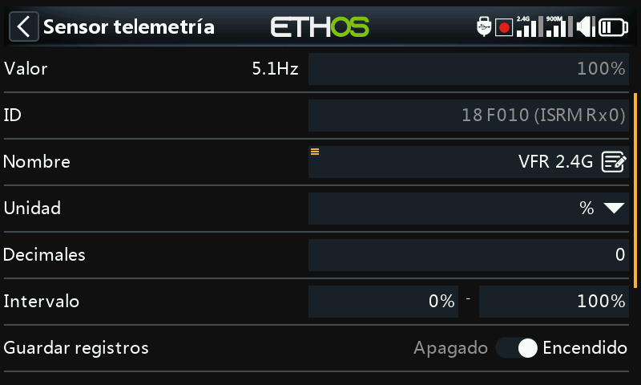
Los receptores TD/TW tienen dos flujos VFR de telemetría (uno por banda); en cambio, Rx VFR (en los receptores TD, TW, AP y AP Plus) tiene en cuenta cada paquete de datos correcto independientemente de la banda desde la que se recibe: si va a monitorizar sólo un dato de VFR, ésta es la mejor opción.
- RxBatt — la medida de tensión de la batería del receptor.
- ADC2 — una segunda entrada de voltaje analógica, en los receptores que la admiten.
- SWR — el valor SWR de la antena, si se usa una antena externa.
- Sensores de actitud/movimiento, cuando se admiten: R.Angle (ángulo de alabeo), P.Angle (ángulo de cabeceo), AccX/Y/Z (aceleración en cada eje).
Tenga en cuenta que todo sensor numérico dispone además, de forma automática, de
los sensores de mínimo y máximo <nombre>-/<nombre>+, aunque no se muestren
en la lista principal de sensores.
Descubrir nuevos sensores¶
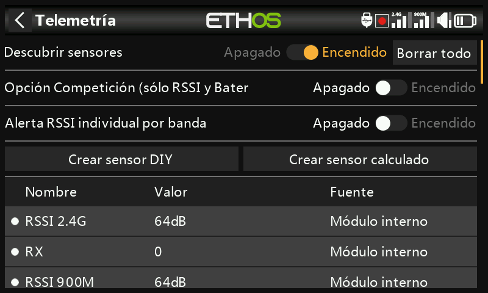
Una vez que todo está vinculado y encendido, active Descubrir nuevos sensores: un punto parpadeante (o un valor en rojo, si aún no se reciben datos) señala cada sensor a medida que se encuentra, y la pantalla se rellena automáticamente. La detección de sensores debe realizarse para cada modelo, y cada vez que se añade un nuevo sensor.
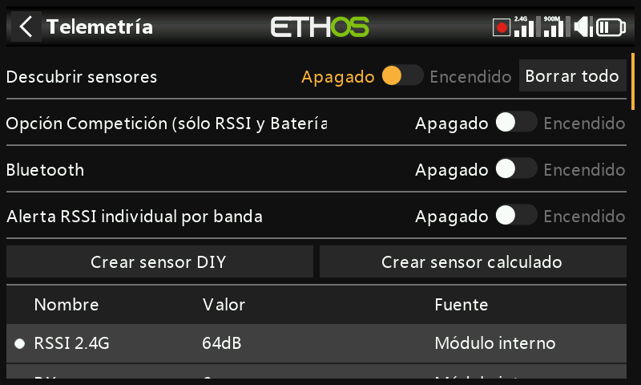
- Mueva el interruptor de descubrimiento a Off una vez que los sensores deseados se hayan descubierto.
- Borrar todo borrará todos los sensores para que se pueda empezar de nuevo.
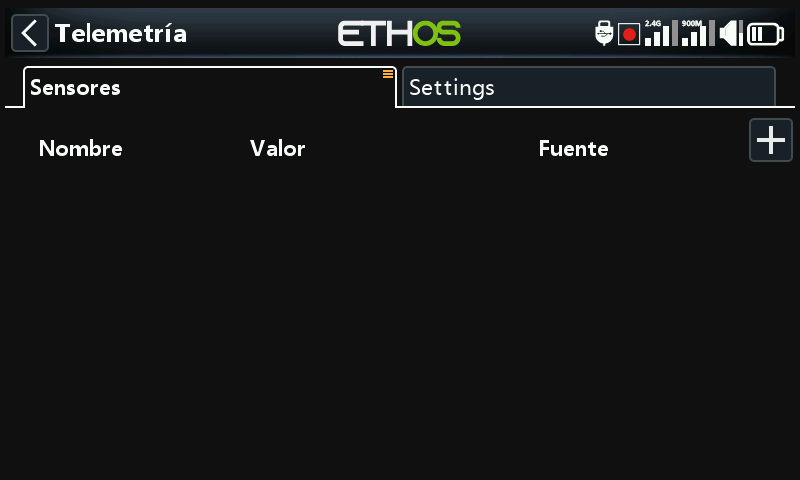
- El modo de competición reduce la telemetría únicamente a RSSI y RxBatt, para aquellas competiciones que sólo permiten sensores de estado del enlace. Una vez desactivado este modo, la radio debe apagarse y encenderse antes de que los sensores puedan volver a descubrirse.
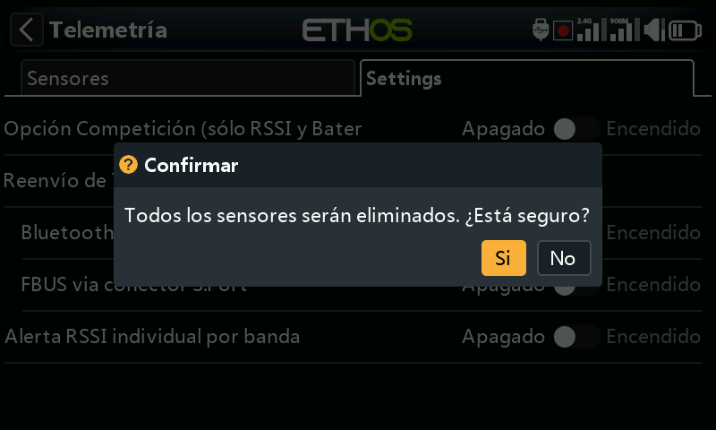
- En el modo de telemetría Bluetooth, la radio trabaja con la aplicación FrSky FreeLink para mostrar los datos de telemetría en su teléfono móvil, y también permite configurar otros dispositivos FrSky, como los receptores estabilizados.
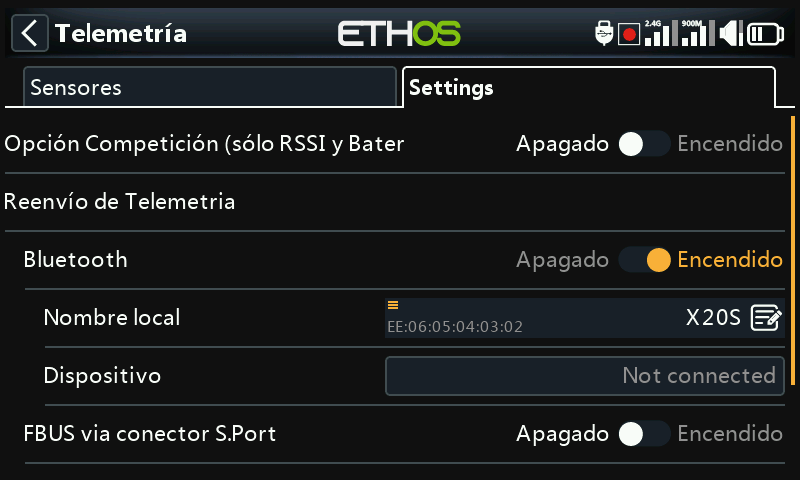
Edición de un sensor¶
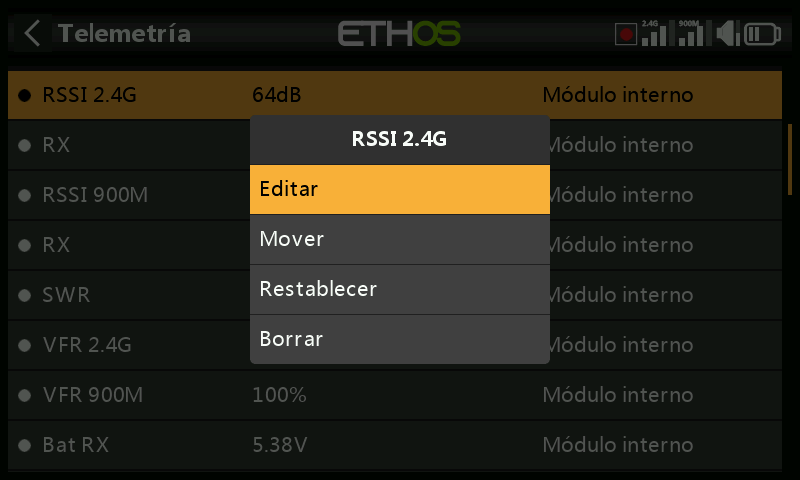
Pulse sobre un sensor para seleccionar Editar, Mover, Reset o Borrar. Campos comunes: Valor (sólo lectura), ID (la ID Física y la ID de la Aplicación, además de la ID del receptor que envía la telemetría), Nombre, Unidad, Decimales, Rango (límites fijos para escalar la medida, sobre todo cuando el sensor se utiliza como fuente para un canal), Escribir registros, Restablecer (una fuente que restablece el sensor) y Retardo de aviso de pérdida de sensor (se puede suprimir el aviso por completo, o establecer un retardo de 1 a 30 s, con 10 s por defecto, para filtrar pérdidas de corta duración, teniendo en cuenta los riesgos que se corren; el aviso de «sensor perdido» sólo suena una vez aunque se pierdan muchos sensores simultáneamente; en los sensores internos del receptor está desconectado por defecto, ya que es muy improbable que se pierdan).
Algunos sensores añaden campos propios:
- ADC2 — Ratio y Desplazamiento (Offset), para corregir la escala.
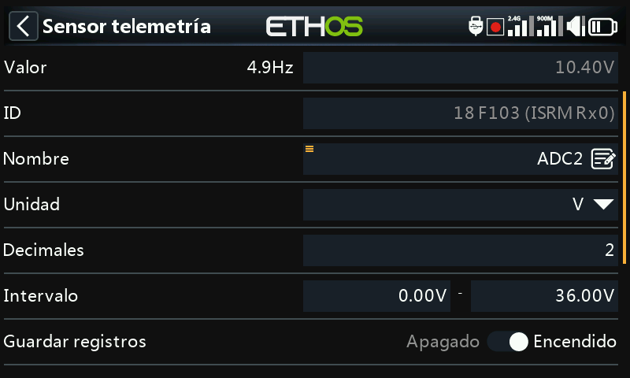
- RSSI — umbrales de Valor crítico y Aviso de valor bajo.
- VFR — Aviso de valor bajo (50 % por defecto).
- VSpeed (velocidad vertical del vario) — Rango de hasta ±100 m/s (±10 m/s por defecto). Los ajustes relacionados con el vario están ahora en la función especial Play Vario, no aquí.
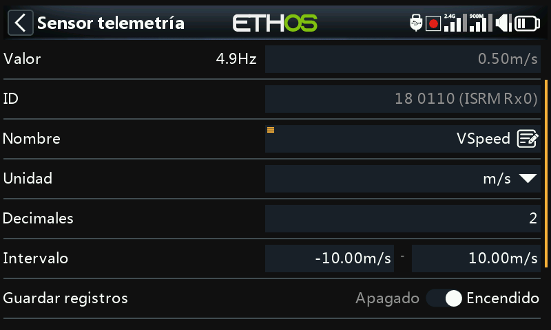
Sensores DIY / de terceros¶
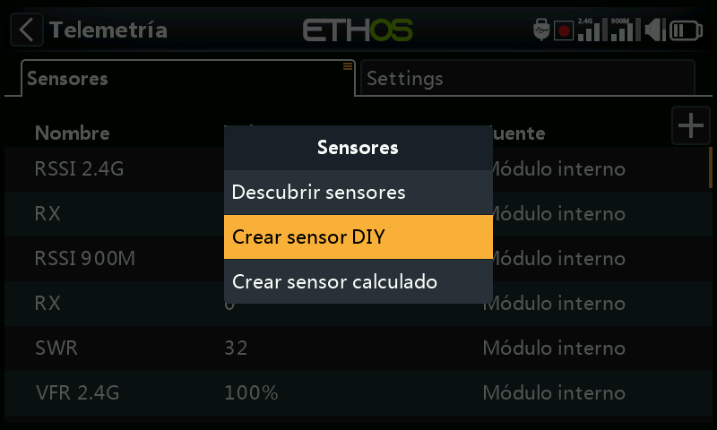
Crear un sensor DIY permite añadir manualmente un sensor fabricado por uno mismo o por terceros: Auto detect (rellena automáticamente la ID Física, la ID de la Aplicación y el Módulo, si es posible), o bien se introducen a mano, además de Precisión del protocolo / unidad (la precisión de entrada, de 0 a 3 decimales, y su unidad de medida) y Precisión de visualización / unidad (independiente de la del protocolo), junto con los mismos campos Rango/Ratio/Desplazamiento/Escribir registros/Restablecer/ Retardo de aviso de pérdida de sensor que cualquier otro sensor.
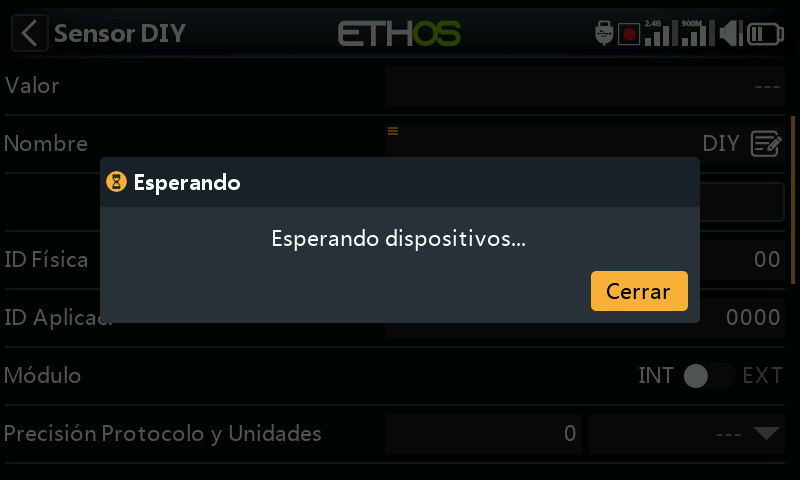
Sensores calculados¶
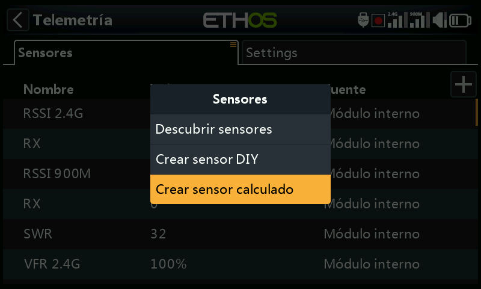
Permiten obtener un nuevo sensor a partir de uno o varios sensores existentes:
- Consumo — la energía consumida, calculada a partir de un sensor de corriente (por ejemplo, los de la serie FAS). Unidad en mAh o Ah, con un rango de hasta 1000 Ah.
- Distancia — a partir de una fuente GPS (más una fuente de altitud, para la distancia en 3D). Unidades en cm, m, km o pies, hasta un máximo de 20 km.
- Viaje — la distancia acumulada entre coordenadas GPS sucesivas. Las mismas unidades, hasta un máximo de 1000 km.
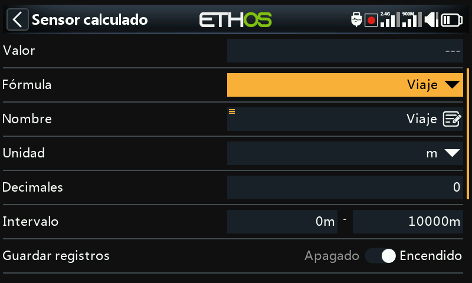
- Multi Lipo — permite conectar en cascada dos o más sensores lipo para poder monitorizar lipos mayores de 6S (hasta 67,2 V, para 8S). Seleccione los sensores lipo en el orden correcto, desde la celda más baja a la más alta; cada sensor lipo adicional debe tener alteradas previamente su ID Física y su ID de la Aplicación desde Device Config (con la herramienta de configuración de Voltaje Lipo que allí se encuentra), descubrirse de uno en uno y renombrarse para poder distinguir uno de otro.
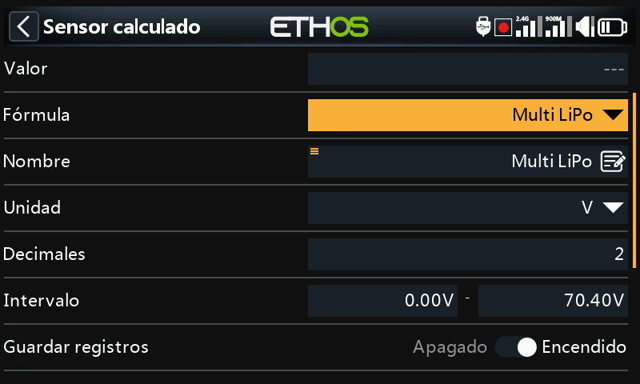
- Porcentaje — convierte los valores de un sensor en un porcentaje de 0 % a 100 %, con una opción Invertir (por ejemplo, para mostrar el porcentaje restante en lugar del consumido).
- Potencia — calcula el vataje a partir de una fuente de Intensidad y otra de Voltaje, hasta 1.000.000 W.
- Personalizado — una fórmula libre encadenada a partir de una o varias fuentes.
Todos los sensores calculados disponen además de Persistente (almacena el valor del sensor en memoria cuando se apaga la radio o se cambia de modelo, y se vuelve a cargar la próxima vez que se utilice el modelo) y de un botón Reset en la propia pantalla de edición.
Sensores personalizados¶
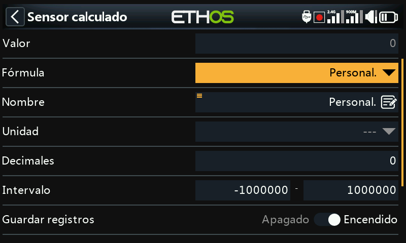
Parten de una fuente y, con Añadir, se encadenan más operaciones: Sumar(+), Restar(-), Multiplicar(x), Dividir (/), Min, Max y Sqrt (raíz cuadrada). Las unidades pueden seleccionarse de una larga lista que abarca voltaje, intensidad, capacidad, potencia, distancia, velocidad, tiempo, temperatura, porcentaje, ángulos, presión y más; el intervalo puede oscilar entre −1.000.000 y 1.000.000, con 0 a 4 decimales.
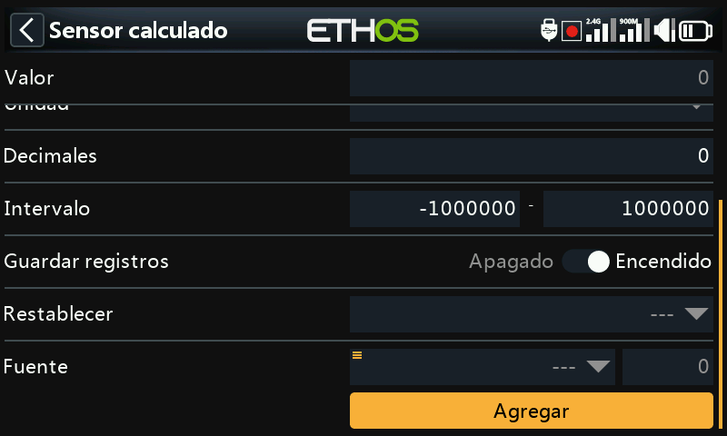
Potencia máxima
Multiplique un sensor de tensión (VFAS) por un sensor de intensidad
(Current) y añada a continuación una función Max que haga referencia
al valor de intensidad del propio sensor personalizado (MaxPower) para
calcular el valor máximo alcanzado: 288 W en esta prueba:
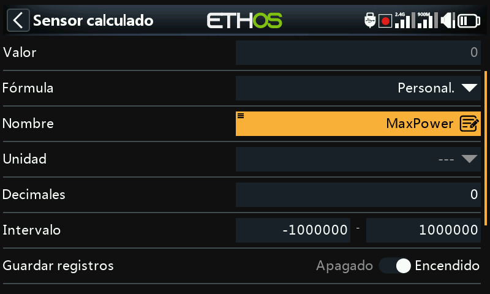
Cálculos aritméticos con una constante
Ajuste la fuente a RSSI 2.4G (con una lectura de 64 dB) y añada después
una acción Restar; mantenga pulsado el parámetro Fuente de esa línea y
seleccione Convertir a valor, con lo que pasa a ser una constante
editable (20) en lugar de una fuente en vivo; el resultado es un valor
estable de 44 dB (64 − 20):
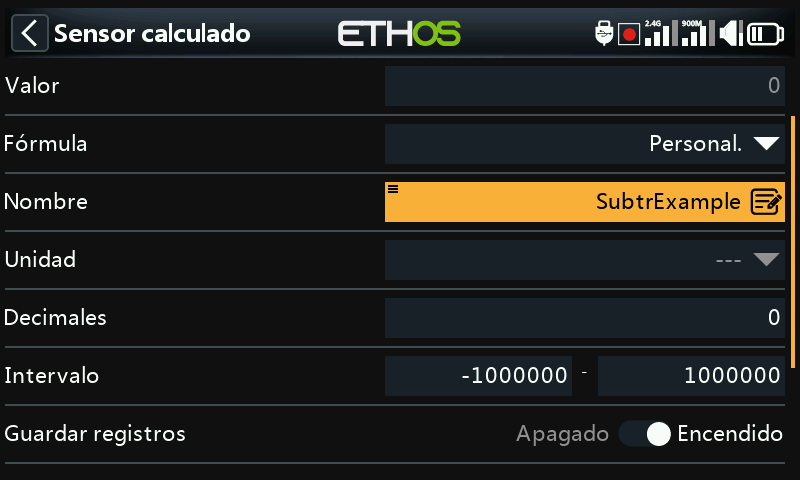
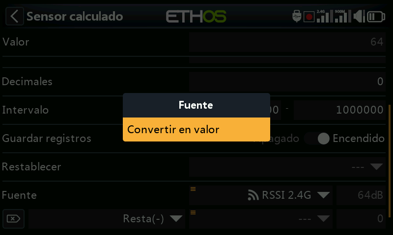
El cálculo interno del valor de una fuente
Toda fuente tiene un rango interno de números enteros de ±1024 que se corresponde con su rango mostrado de ±100 %; puede verse directamente con un sensor personalizado que utilice como fuente, por ejemplo, el Motor: con el motor al 100 % el valor interno es +1024, y con el motor a −100 % es −1024.
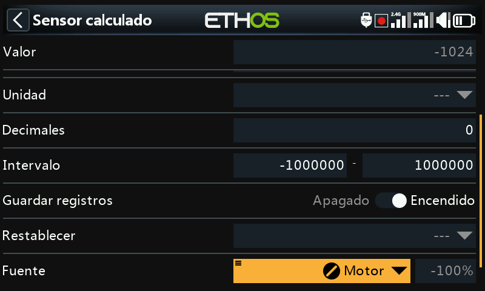